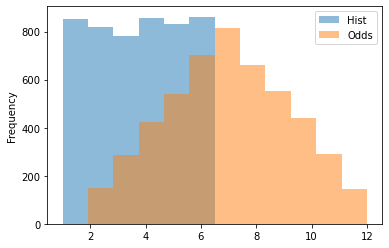

Before starting on Pandas, let’s take a look at Python’s data types and how they are different from one another. This table below summarizes everything we need to know about python’s data types.
Pandas provides numerous tools to work with tabular data like you'd find in spreadsheets or databases. It is widely used for data preparation, cleaning, and analysis. It can work with a wide variety of data and provides many visualization options. It is built on top of NumPy.
import numpy as np
import pandas as pd
# Pandas uses something called a dataframe. It is a
# 2D data structure that can hold multiple data types.
# Columns have labels.
# Series are built on top of NumPy arrays.
# Create a series by first creating a list
list_1 = ['a', 'b', 'c', 'd']
# I can define that I want the series indexes to be the
# provided labels
labels = [1, 2, 3, 4]
ser_1 = pd.Series(data=list_1, index=labels)
# You can also add a NumPy array
arr_1 = np.array([1, 2, 3, 4])
ser_2 = pd.Series(arr_1)
# You can quickly add labels and values with a dictionary
dict_1 = {"f_name": "Derek",
"l_name": "Banas",
"age": 44}
ser_3 = pd.Series(dict_1)
# Get data by label
ser_3["f_name"]
# You can get the datatype## 'Derek'ser_2.dtype
# You can perform math operations on series## dtype('int32')ser_2 + ser_2## 0 2
## 1 4
## 2 6
## 3 8
## dtype: int32ser_2 - ser_2## 0 0
## 1 0
## 2 0
## 3 0
## dtype: int32ser_2 * ser_2## 0 1
## 1 4
## 2 9
## 3 16
## dtype: int32ser_2 / ser_2
# You can pass them into NumPy methods
# See NumPy tutorial for more math methods## 0 1.0
## 1 1.0
## 2 1.0
## 3 1.0
## dtype: float64np.exp(ser_2)
# The difference between Series and ndarray is that operations
# align by labels
# Create a series from a dictionary## 0 2.718282
## 1 7.389056
## 2 20.085537
## 3 54.598150
## dtype: float64ser_4 = pd.Series({4: 5, 5: 6, 6: 7, 7: 8})
# If labels don't align you will get NaN
ser_2 + ser_4
# You can assign names to series## 0 NaN
## 1 NaN
## 2 NaN
## 3 NaN
## 4 NaN
## 5 NaN
## 6 NaN
## 7 NaN
## dtype: float64ser_4 = pd.Series({8: 9, 9: 10}, name='rand_nums')
ser_4.name## 'rand_nums'DataFrames are the most commonly used data structure with Pandas. They are made up of multiple series that share the same index / label. They can contain multiple data types. They can be created from dicts, series, lists or other dataframes.
from numpy import random
# Create random matrix 2x3 with values between 10 and 50
arr_2 = np.random.randint(10, 50, size=(2, 3))
# Create DF with data, row labels & column labels
df_1 = pd.DataFrame(arr_2, ['A', 'B'], ['C', 'D', 'E'])
# Create a DF from multiple series in a dict
# If series are of different lengthes extra spaces are NaN
dict_3 = {'one': pd.Series([1., 2., 3.], index=['a', 'b', 'c']),
'two': pd.Series([1., 2., 3., 4.], index=['a', 'b', 'c', 'd'])}
df_2 = pd.DataFrame(dict_3)
df_2
# from_dict accepts a column labels and lists## one two
## a 1.0 1.0
## b 2.0 2.0
## c 3.0 3.0
## d NaN 4.0pd.DataFrame.from_dict(dict([('A', [1,2,3]), ('B', [4,5,6])]))
# You can assign the keys as row labels and column labels separate
# with orient='index'## A B
## 0 1 4
## 1 2 5
## 2 3 6pd.DataFrame.from_dict(dict([('A', [1,2,3]), ('B', [4,5,6])]),
orient='index', columns=['one','two','three'])
# Get number of rows and columns as tuple## one two three
## A 1 2 3
## B 4 5 6print(df_1.shape)## (2, 3)# Grab a column
df_1['C']
# Get multiple columns## A 11
## B 28
## Name: C, dtype: int32df_1[['C', 'E']]
# Grabb a row as a series## C E
## A 11 12
## B 28 42df_1.loc['A']
# Grab row by index position## C 11
## D 19
## E 12
## Name: A, dtype: int32df_1.iloc[1]
# Grab cell with Row & Column## C 28
## D 18
## E 42
## Name: B, dtype: int32df_1.loc['A', 'C']
# Grab multiple cells by defining rows wanted & the
# columns from those rows## 11print(df_1.loc[['A', 'B'], ['D', 'E']])
# Make new column## D E
## A 19 12
## B 18 42df_1['Total'] = df_1['C'] + df_1['D'] + df_1['E']
df_1
# You can perform multiple calculations## C D E Total
## A 11 19 12 42
## B 28 18 42 88df_2['mult'] = df_2['one'] * df_2['two']
df_2
# Make a new row by appending## one two mult
## a 1.0 1.0 1.0
## b 2.0 2.0 4.0
## c 3.0 3.0 9.0
## d NaN 4.0 NaNdict_2 = {'C': 44, 'D': 45, 'E': 46}
new_row = pd.Series(dict_2, name='F')
df_1_save = df_1
df_1 = df_1.append(new_row, ignore_index = False)
# df_1 = pd.concat([df_1, new_row], axis = 0)
# Delete column and set inplace to True which is required
# because Pandas tries to help you not delete data
# by accident## <string>:1: FutureWarning: The frame.append method is deprecated and will be removed from pandas in a future version. Use pandas.concat instead.df_1.drop('Total', axis=1, inplace=True)
df_1
# Delete a row## C D E
## A 11 19 12
## B 28 18 42
## F 44 45 46df_1.drop('B', axis=0, inplace=True)
df_1
# Create a new column and make it the index## C D E
## A 11 19 12
## F 44 45 46df_1['Sex'] = ['Men', 'Women']
df_1.set_index('Sex', inplace=True)
# You can reset index values to numbers
#df_1.reset_index(inplace=True)
df_1
# Assign can be used to create a column while leaving the
# original DF untouched## C D E
## Sex
## Men 11 19 12
## Women 44 45 46df_2.assign(div=df_2['one'] / df_2['two'])
# You can pass in a function as well## one two mult div
## a 1.0 1.0 1.0 1.0
## b 2.0 2.0 4.0 1.0
## c 3.0 3.0 9.0 1.0
## d NaN 4.0 NaN NaNdf_2.assign(div=lambda x: (x['one'] / x['two']))
# Combine DataFrames while keeping df_3 data unless
# there is a NaN value## one two mult div
## a 1.0 1.0 1.0 1.0
## b 2.0 2.0 4.0 1.0
## c 3.0 3.0 9.0 1.0
## d NaN 4.0 NaN NaNdf_3 = pd.DataFrame({'A': [1., np.nan, 3., np.nan]})
df_4 = pd.DataFrame({'A': [8., 9., 2., 4.]})
df_3.combine_first(df_4)## A
## 0 1.0
## 1 9.0
## 2 3.0
## 3 4.0 D E
A 23 23
B 34 49Extract Keys with values
# creating a new dictionary
my_dict ={"Java":100, "Python":112, "C":11}
# one-liner
print("One line Code Key value: ", list(my_dict.keys())
[list(my_dict.values()).index(100)])
# Get the key by Value using list comprehension## One line Code Key value: Javadic ={"geeks": "A","for":"B","geeks":"C"}
value = {i for i in dic if dic[i]=="B"}
print("key by value:",value)
# Using list.index
# creating a new dictionary## key by value: {'for'}my_dict ={"java":100, "python":112, "c":11}
# list out keys and values separately
key_list = list(my_dict.keys())
val_list = list(my_dict.values())
# print key with val 100
position = val_list.index(100)
print(key_list[position])
## javat=pd.DataFrame()
t['a']=[1,2,3,4]
t=t.loc[t['a']>1] #now index starts from 1
u=pd.DataFrame()
u['b']=[1,2,3] #index starts from 0
#option 1
#keep index of t
u.index = t.index
#option 2
#index of t starts from 0
t.reset_index(drop=True, inplace=True)
#now concat will keep number of rows
r=pd.concat([t,u], axis=1)
dict_data = {'Treatment': ['C', 'C', 'C'], 'Biorep': ['A', 'A', 'A'], 'Techrep': [1, 1, 1], 'AAseq': ['ELVISLIVES', 'ELVISLIVES', 'ELVISLIVES'], 'mz':[500.0, 500.5, 501.0]}
df_a = pd.DataFrame(dict_data)
dict_data = {'Treatment1': ['C', 'C', 'C'], 'Biorep1': ['A', 'A', 'A'], 'Techrep1': [1, 1, 1], 'AAseq1': ['ELVISLIVES', 'ELVISLIVES', 'ELVISLIVES'], 'inte1':[1100.0, 1050.0, 1010.0]}
df_b = pd.DataFrame(dict_data)
# call concat and pass param axis=1 to concatenate column-wise:
pd.concat([df_a,df_b], axis=1)
# Since we have no clashing columns, we can merge and use the indices as they have the same number of rows:## Treatment Biorep Techrep AAseq ... Biorep1 Techrep1 AAseq1 inte1
## 0 C A 1 ELVISLIVES ... A 1 ELVISLIVES 1100.0
## 1 C A 1 ELVISLIVES ... A 1 ELVISLIVES 1050.0
## 2 C A 1 ELVISLIVES ... A 1 ELVISLIVES 1010.0
##
## [3 rows x 10 columns]df_a.merge(df_b, left_index=True, right_index=True)
# And for the same reasons as above a simple join works too:## Treatment Biorep Techrep AAseq ... Biorep1 Techrep1 AAseq1 inte1
## 0 C A 1 ELVISLIVES ... A 1 ELVISLIVES 1100.0
## 1 C A 1 ELVISLIVES ... A 1 ELVISLIVES 1050.0
## 2 C A 1 ELVISLIVES ... A 1 ELVISLIVES 1010.0
##
## [3 rows x 10 columns]df_a.join(df_b)
# Appending rows to a DataFrame## Treatment Biorep Techrep AAseq ... Biorep1 Techrep1 AAseq1 inte1
## 0 C A 1 ELVISLIVES ... A 1 ELVISLIVES 1100.0
## 1 C A 1 ELVISLIVES ... A 1 ELVISLIVES 1050.0
## 2 C A 1 ELVISLIVES ... A 1 ELVISLIVES 1010.0
##
## [3 rows x 10 columns]s2 = pd.Series(["X0", "X1", "X2", "X3"], index=["A", "B", "C", "D"])
df1 = pd.DataFrame(
{
"A": ["A0", "A1", "A2", "A3"],
"B": ["B0", "B1", "B2", "B3"],
"C": ["C0", "C1", "C2", "C3"],
"D": ["D0", "D1", "D2", "D3"],
}, index=[0, 1, 2, 3],)
df2 = pd.DataFrame(
{
"A": ["A4", "A5", "A6", "A7"],
"B": ["B4", "B5", "B6", "B7"],
"C": ["C4", "C5", "C6", "C7"],
"D": ["D4", "D5", "D6", "D7"],
},index=[4, 5, 6, 7],)
df3 = pd.DataFrame(
{
"A": ["A8", "A9", "A10", "A11"],
"B": ["B8", "B9", "B10", "B11"],
"C": ["C8", "C9", "C10", "C11"],
"D": ["D8", "D9", "D10", "D11"],
}, index=[8, 9, 10, 11],)
frames = [df1, df2, df3]
# result = pd.concat([df1, s2.to_frame().T], ignore_index=True)
result = pd.concat(frames)arr_2 = np.random.randint(10, 50, size=(2, 3))
df_1 = pd.DataFrame(arr_2, ['A', 'B'], ['C', 'D', 'E'])
print(df_1)
# You can use conditional operators to retrieve a table
# based on the condition## C D E
## A 18 29 18
## B 38 36 41print("Greater than 40\n", df_1 > 40.0)
# You can use comparison operater functions as well like
# gt, lt, ge, le, eq, ne## Greater than 40
## C D E
## A False False False
## B False False Trueprint("Greater than 45\n", df_1.gt(45.0))
# You can place conditions in brackets as well## Greater than 45
## C D E
## A False False False
## B False False Falsebool_1 = df_1 >= 45.0
df_1[bool_1]
# Get bools for a column## C D E
## A NaN NaN NaN
## B NaN NaN NaNdf_1['E'] > 40
# Return a row if cell value in column matches a condition## A False
## B True
## Name: E, dtype: booldf_1[df_1['E']>30]
# You can focus on a column based on resulting dataframe## C D E
## B 38 36 41df_2 = df_1[df_1['E']>30]
df_2['C']
# You can stack these commands## B 38
## Name: C, dtype: int32print(df_1[df_1['E']>20]['C'])## B 38
## Name: C, dtype: int32print()
# You can also grab multiple columnsprint(df_1[df_1['E']>20][['C', 'D']])## C D
## B 38 36print()
# You can use multiple conditionsarr_3 = np.array([[1, 2, 3], [4, 5, 6], [7, 8, 9]])
df_2 = pd.DataFrame(arr_3, ['A', 'B', 'C'], ['X', 'Y', 'Z'])
print(df_2, "\n")
# You can use or | to combine conditions as well## X Y Z
## A 1 2 3
## B 4 5 6
## C 7 8 9df_2[(df_2['X']>3) & (df_2['X']<7)]## X Y Z
## B 4 5 6 C D E
A 19 38 16
B 17 14 13
Greater than 40
C D E
A False False False
B False False False
Greater than 45
C D E
A False False False
B False False False
Series([], Name: C, dtype: int64)
Empty DataFrame
Columns: [C, D]
Index: []
X Y Z
A 1 2 3
B 4 5 6
C 7 8 9 Pandas can work with the following types of data : CSV, Plain Text, JSON, XML, PDF, SQL, HTML, XLSX, DOCX, ZIP, Images Hierarchical Data Format, MP3, and MP4.
# !pip install openpyxl
import pymysql
import openpyxl
# Read a CSV file
# Type pd.read_ [TAB] to see the file types you can read
cs_df = pd.read_csv('ComputerSales.csv')
# Save a CSV file, but don't save the index as a column
cs_df.to_csv('ComputerSalesBU.csv', index=False)
# You can read data from Excel, but not formulas and macros
pd.read_excel('Financial Sample.xlsx',0)
# Write to Excel## Segment Country ... Month Name Year
## 0 Government Canada ... January 2014
## 1 Government Germany ... January 2014
## 2 Midmarket France ... June 2014
## 3 Midmarket Germany ... June 2014
## 4 Midmarket Mexico ... June 2014
## .. ... ... ... ... ...
## 695 Small Business France ... March 2014
## 696 Small Business Mexico ... October 2014
## 697 Government Mexico ... February 2014
## 698 Government Canada ... April 2014
## 699 Channel Partners United States of America ... May 2014
##
## [700 rows x 16 columns]cs_df.to_excel('ComputerSales.xlsx')
# Check if written
pd.read_excel('ComputerSales.xlsx',0)
# # Read from MySQL Database
# try:
# db_connection = pymysql.connect(db='students', user='studentadmin', passwd='TurtleDove', host='localhost', port=3306)
#
# stud_df = pd.read_sql('SELECT * FROM students', con=db_connection)
# # print(stud_df)
# except Exception as e:
# print("Exception : {}".format(e))
# finally:
# db_connection.close()
#
#
# # Write to table
# try:
# db_connection = pymysql.connect(db='students', user='studentadmin', passwd='TurtleDove', host='localhost', port=3306)
# # Used to issue queries
# cursor = db_connection.cursor()
# # Query to enter new student
# insert_stmt = "INSERT INTO students VALUES(NULL, 'Frank', 'Silva', 'fsilva@aol.com', '666 Hell St', 'Yakima', 'WA', 98901, '792-223-8966', '1959-2-22', 'M', NOW(), 3.50)"
# # Execute query
# cursor.execute(insert_stmt)
# # Commit changes to DB
# db_connection.commit()
# stud_df = pd.read_sql('SELECT * FROM students', con=db_connection)
# print(stud_df)
# except Exception as e:
# print("Exception : {}".format(e))
# finally:
# db_connection.close()
# Just get 1 column of data ## Unnamed: 0 Sale ID Contact Sex ... Profit Lead Month Year
## 0 0 1 Paul Thomas M ... 143.39 Website January 2018
## 1 1 2 Margo Simms F ... 230.89 Flyer 4 January 2018
## 2 2 3 Sam Stine M ... 118.64 Website February 2018
## 3 3 4 Moe Eggert M ... 72.09 Website March 2018
## 4 4 5 Jessica Elk F ... 98.09 Flyer 4 March 2018
## 5 5 6 Sally Struthers F ... 230.89 Flyer 2 April 2018
## 6 6 7 Michelle Samms F ... 180.34 Email May 2018
## 7 7 8 Mick Roberts M ... 146.69 Website July 2018
## 8 8 9 Ed Klondike M ... 122.34 Email July 2018
## 9 9 10 Phil Jones M ... 143.39 Flyer 2 August 2018
## 10 10 11 Rick James M ... 180.34 Flyer 3 November 2018
## 11 11 12 Sue Etna F ... 230.89 Flyer 2 November 2018
## 12 12 13 Jason Case M ... 122.34 Email November 2018
## 13 13 14 Doug Johnson M ... 118.64 Website December 2018
## 14 14 15 Andy Sands M ... 146.69 Flyer 1 December 2018
## 15 15 16 Kim Collins F ... 72.09 Flyer 2 January 2019
## 16 16 17 Edna Sanders F ... 98.09 Email February 2019
## 17 17 18 Michelle Samms F ... 146.69 Website March 2019
## 18 18 19 Mick Roberts M ... 72.09 Flyer 4 March 2019
## 19 19 20 Sally Struthers F ... 122.34 Website April 2019
## 20 20 21 Jason Case M ... 143.39 Flyer 4 May 2019
## 21 21 22 Doug Johnson M ... 180.34 Website August 2019
## 22 22 23 Paul Thomas M ... 122.34 Website August 2019
## 23 23 24 Margo Simms F ... 143.09 Flyer 4 November 2019
## 24 24 25 Michelle Samms F ... 118.64 Flyer 2 November 2019
## 25 25 26 Mick Roberts M ... 143.09 Email November 2019
## 26 26 27 Ed Klondike M ... 143.09 Website December 2019
## 27 27 28 Moe Eggert M ... 98.09 Email December 2019
## 28 28 29 Jessica Elk F ... 180.34 Flyer 2 December 2019
## 29 29 30 Phil Jones M ... 143.39 Flyer 2 January 2020
## 30 30 31 Rick James M ... 180.34 Flyer 1 January 2020
## 31 31 32 Sue Etna F ... 230.89 Flyer 2 February 2020
## 32 32 33 Kim Collins F ... 72.09 Flyer 2 March 2020
## 33 33 34 Edna Sanders F ... 98.09 Email March 2020
## 34 34 35 Michelle Samms F ... 146.69 Website April 2020
## 35 35 36 Sally Struthers F ... 122.34 Website April 2020
## 36 36 37 Jason Case M ... 143.39 Flyer 4 April 2020
## 37 37 38 Doug Johnson M ... 180.34 Website May 2020
## 38 38 39 Moe Eggert M ... 72.09 Website May 2020
##
## [39 rows x 13 columns]cs_df_st = pd.read_csv('ComputerSales.csv', usecols=["State"], squeeze=True)## <string>:1: FutureWarning: The squeeze argument has been deprecated and will be removed in a future version. Append .squeeze("columns") to the call to squeeze.cs_df_st## 0 OH
## 1 WV
## 2 PA
## 3 PA
## 4 PA
## 5 PA
## 6 OH
## 7 OH
## 8 OH
## 9 WV
## 10 PA
## 11 OH
## 12 PA
## 13 PA
## 14 OH
## 15 PA
## 16 OH
## 17 NY
## 18 PA
## 19 NY
## 20 PA
## 21 PA
## 22 OH
## 23 WV
## 24 NY
## 25 PA
## 26 OH
## 27 PA
## 28 PA
## 29 WV
## 30 PA
## 31 OH
## 32 PA
## 33 OH
## 34 NY
## 35 NY
## 36 PA
## 37 PA
## 38 PA
## Name: State, dtype: object student_id first_name last_name email street \
0 1 Dale Cooper dcooper@aol.com 123 Main St
1 2 Harry Truman htruman@aol.com 202 South St
2 3 Shelly Johnson sjohnson@aol.com 9 Pond Rd
3 4 Bobby Briggs bbriggs@aol.com 14 12th St
4 5 Donna Hayward dhayward@aol.com 120 16th St
5 6 Audrey Horne ahorne@aol.com 342 19th St
6 7 James Hurley jhurley@aol.com 2578 Cliff St
7 8 Lucy Moran lmoran@aol.com 178 Dover St
8 9 Tommy Hill thill@aol.com 672 High Plains
9 10 Andy Brennan abrennan@aol.com 281 4th St
10 13 Frank Silva fsilva@aol.com 666 Hell St
11 14 Frank Silva fsilva@aol.com 666 Hell St
12 15 Frank Silva fsilva@aol.com 666 Hell St
13 16 Frank Silva fsilva@aol.com 666 Hell St
city state zip phone birth_date sex \
0 Yakima WA 98901 792-223-8901 1959-02-22 M
1 Vancouver WA 98660 792-223-9810 1946-01-24 M
2 Sparks NV 89431 792-223-6734 1970-12-12 F
3 San Diego CA 92101 792-223-6178 1967-05-24 M
4 Davenport IA 52801 792-223-2001 1970-03-24 F
5 Detroit MI 48222 792-223-2001 1965-02-01 F
6 Queens NY 11427 792-223-1890 1967-01-02 M
7 Hollywood CA 90078 792-223-9678 1954-11-27 F
8 Tucson AZ 85701 792-223-1115 1951-12-21 M
9 Jacksonville NC 28540 792-223-8902 1960-12-27 M
10 Yakima WA 98901 792-223-8966 1959-02-22 M
11 Yakima WA 98901 792-223-8966 1959-02-22 M
12 Yakima WA 98901 792-223-8966 1959-02-22 M
13 Yakima WA 98901 792-223-8966 1959-02-22 M
date_entered lunch_cost
0 2019-12-10 13:09:03 3.5
1 2019-12-10 13:19:12 3.5
2 2019-12-10 13:19:12 3.5
3 2019-12-10 13:19:12 3.5
4 2019-12-10 13:19:12 3.5
5 2019-12-10 13:19:12 3.5
6 2019-12-10 13:19:12 3.5
7 2019-12-10 13:19:12 3.5
8 2019-12-10 13:19:12 3.5
9 2019-12-10 13:19:12 3.5
10 2020-08-09 13:42:56 3.5
11 2020-08-11 09:54:40 3.5
12 2020-08-12 16:43:43 3.5
13 2020-08-12 16:54:12 3.5
0 OH
1 WV
2 PA
3 PA
4 PA
5 PA
6 OH
7 OH
8 OH
9 WV
10 PA
11 OH
12 PA
13 PA
14 OH
15 PA
16 OH
17 NY
18 PA
19 NY
20 PA
21 PA
22 OH
23 WV
24 NY
25 PA
26 OH
27 PA
28 PA
29 WV
30 PA
31 OH
32 PA
33 OH
34 NY
35 NY
36 PA
37 PA
38 PA
Name: State, dtype: object# Display 1st 5 rows
cs_df.head()
# Display last 5 rows## Sale ID Contact Sex Age ... Profit Lead Month Year
## 0 1 Paul Thomas M 43 ... 143.39 Website January 2018
## 1 2 Margo Simms F 37 ... 230.89 Flyer 4 January 2018
## 2 3 Sam Stine M 26 ... 118.64 Website February 2018
## 3 4 Moe Eggert M 35 ... 72.09 Website March 2018
## 4 5 Jessica Elk F 55 ... 98.09 Flyer 4 March 2018
##
## [5 rows x 12 columns]cs_df.tail()
# Get 1st 2## Sale ID Contact Sex Age ... Profit Lead Month Year
## 34 35 Michelle Samms F 46 ... 146.69 Website April 2020
## 35 36 Sally Struthers F 45 ... 122.34 Website April 2020
## 36 37 Jason Case M 57 ... 143.39 Flyer 4 April 2020
## 37 38 Doug Johnson M 51 ... 180.34 Website May 2020
## 38 39 Moe Eggert M 35 ... 72.09 Website May 2020
##
## [5 rows x 12 columns]cs_df[:2]
# Get 1st through 5 with a 2 step## Sale ID Contact Sex Age ... Profit Lead Month Year
## 0 1 Paul Thomas M 43 ... 143.39 Website January 2018
## 1 2 Margo Simms F 37 ... 230.89 Flyer 4 January 2018
##
## [2 rows x 12 columns]cs_df[:5:2]
# Get indexes## Sale ID Contact Sex Age ... Profit Lead Month Year
## 0 1 Paul Thomas M 43 ... 143.39 Website January 2018
## 2 3 Sam Stine M 26 ... 118.64 Website February 2018
## 4 5 Jessica Elk F 55 ... 98.09 Flyer 4 March 2018
##
## [3 rows x 12 columns]cs_df.index.array
# Get NumPy array## <PandasArray>
## [ 0, 1, 2, 3, 4, 5, 6, 7, 8, 9, 10, 11, 12, 13, 14, 15, 16, 17, 18,
## 19, 20, 21, 22, 23, 24, 25, 26, 27, 28, 29, 30, 31, 32, 33, 34, 35, 36, 37,
## 38]
## Length: 39, dtype: int64cs_df.to_numpy()
# Get array from series## array([[1, 'Paul Thomas', 'M', 43, 'OH', 'M01-F0024', 'Desktop', 479.99,
## 143.39, 'Website', 'January', 2018],
## [2, 'Margo Simms', 'F', 37, 'WV', 'GT13-0024', 'Desktop', 1249.99,
## 230.89, 'Flyer 4', 'January', 2018],
## [3, 'Sam Stine', 'M', 26, 'PA', 'I3670', 'Desktop', 649.99,
## 118.64, 'Website', 'February', 2018],
## [4, 'Moe Eggert', 'M', 35, 'PA', 'I3593', 'Laptop', 399.99, 72.09,
## 'Website', 'March', 2018],
## [5, 'Jessica Elk', 'F', 55, 'PA', '15M-ED', 'Laptop', 699.99,
## 98.09, 'Flyer 4', 'March', 2018],
## [6, 'Sally Struthers', 'F', 45, 'PA', 'GT13-0024', 'Desktop',
## 1249.99, 230.89, 'Flyer 2', 'April', 2018],
## [7, 'Michelle Samms', 'F', 46, 'OH', 'GA401IV', 'Laptop', 1349.99,
## 180.34, 'Email', 'May', 2018],
## [8, 'Mick Roberts', 'M', 23, 'OH', 'MY2J2LL', 'Tablet', 999.99,
## 146.69, 'Website', 'July', 2018],
## [9, 'Ed Klondike', 'M', 52, 'OH', '81TC00', 'Laptop', 649.99,
## 122.34, 'Email', 'July', 2018],
## [10, 'Phil Jones', 'M', 56, 'WV', 'M01-F0024', 'Desktop', 479.99,
## 143.39, 'Flyer 2', 'August', 2018],
## [11, 'Rick James', 'M', 49, 'PA', 'GA401IV', 'Laptop', 1349.99,
## 180.34, 'Flyer 3', 'November', 2018],
## [12, 'Sue Etna', 'F', 54, 'OH', 'GT13-0024', 'Desktop', 1249.99,
## 230.89, 'Flyer 2', 'November', 2018],
## [13, 'Jason Case', 'M', 57, 'PA', '81TC00', 'Laptop', 649.99,
## 122.34, 'Email', 'November', 2018],
## [14, 'Doug Johnson', 'M', 51, 'PA', 'I3670', 'Desktop', 649.99,
## 118.64, 'Website', 'December', 2018],
## [15, 'Andy Sands', 'M', 56, 'OH', 'MY2J2LL', 'Tablet', 999.99,
## 146.69, 'Flyer 1', 'December', 2018],
## [16, 'Kim Collins', 'F', 49, 'PA', 'I3593', 'Laptop', 399.99,
## 72.09, 'Flyer 2', 'January', 2019],
## [17, 'Edna Sanders', 'F', 46, 'OH', '15M-ED', 'Laptop', 699.99,
## 98.09, 'Email', 'February', 2019],
## [18, 'Michelle Samms', 'F', 46, 'NY', 'MY2J2LL', 'Tablet', 999.99,
## 146.69, 'Website', 'March', 2019],
## [19, 'Mick Roberts', 'M', 23, 'PA', 'I3593', 'Laptop', 399.99,
## 72.09, 'Flyer 4', 'March', 2019],
## [20, 'Sally Struthers', 'F', 45, 'NY', '81TC00', 'Laptop', 649.99,
## 122.34, 'Website', 'April', 2019],
## [21, 'Jason Case', 'M', 57, 'PA', 'M01-F0024', 'Desktop', 479.99,
## 143.39, 'Flyer 4', 'May', 2019],
## [22, 'Doug Johnson', 'M', 51, 'PA', 'GA401IV', 'Laptop', 1349.99,
## 180.34, 'Website', 'August', 2019],
## [23, 'Paul Thomas', 'M', 43, 'OH', '81TC00', 'Laptop', 649.99,
## 122.34, 'Website', 'August', 2019],
## [24, 'Margo Simms', 'F', 37, 'WV', 'Q526FA', 'Laptop', 1049.99,
## 143.09, 'Flyer 4', 'November', 2019],
## [25, 'Michelle Samms', 'F', 46, 'NY', 'I3670', 'Desktop', 649.99,
## 118.64, 'Flyer 2', 'November', 2019],
## [26, 'Mick Roberts', 'M', 23, 'PA', 'Q526FA', 'Laptop', 1049.99,
## 143.09, 'Email', 'November', 2019],
## [27, 'Ed Klondike', 'M', 52, 'OH', 'Q526FA', 'Laptop', 1049.99,
## 143.09, 'Website', 'December', 2019],
## [28, 'Moe Eggert', 'M', 35, 'PA', '15M-ED', 'Laptop', 699.99,
## 98.09, 'Email', 'December', 2019],
## [29, 'Jessica Elk', 'F', 55, 'PA', 'GA401IV', 'Laptop', 1349.99,
## 180.34, 'Flyer 2', 'December', 2019],
## [30, 'Phil Jones', 'M', 56, 'WV', 'M01-F0024', 'Desktop', 479.99,
## 143.39, 'Flyer 2', 'January', 2020],
## [31, 'Rick James', 'M', 49, 'PA', 'GA401IV', 'Laptop', 1349.99,
## 180.34, 'Flyer 1', 'January', 2020],
## [32, 'Sue Etna', 'F', 54, 'OH', 'GT13-0024', 'Desktop', 1249.99,
## 230.89, 'Flyer 2', 'February', 2020],
## [33, 'Kim Collins', 'F', 49, 'PA', 'I3593', 'Laptop', 399.99,
## 72.09, 'Flyer 2', 'March', 2020],
## [34, 'Edna Sanders', 'F', 46, 'OH', '15M-ED', 'Laptop', 699.99,
## 98.09, 'Email', 'March', 2020],
## [35, 'Michelle Samms', 'F', 46, 'NY', 'MY2J2LL', 'Tablet', 999.99,
## 146.69, 'Website', 'April', 2020],
## [36, 'Sally Struthers', 'F', 45, 'NY', '81TC00', 'Laptop', 649.99,
## 122.34, 'Website', 'April', 2020],
## [37, 'Jason Case', 'M', 57, 'PA', 'M01-F0024', 'Desktop', 479.99,
## 143.39, 'Flyer 4', 'April', 2020],
## [38, 'Doug Johnson', 'M', 51, 'PA', 'GA401IV', 'Laptop', 1349.99,
## 180.34, 'Website', 'May', 2020],
## [39, 'Moe Eggert', 'M', 35, 'PA', 'I3593', 'Laptop', 399.99,
## 72.09, 'Website', 'May', 2020]], dtype=object)ser_1.array## <PandasArray>
## ['a', 'b', 'c', 'd']
## Length: 4, dtype: objectdict_3 = {'one': pd.Series([1., 2., 3.], index=['a', 'b', 'c']),
'two': pd.Series([1., 2., 3., 4.], index=['a', 'b', 'c', 'd'])}
df_2 = pd.DataFrame(dict_3)
# You can replace NaN values with 0 or anything else
print(df_2.fillna(0))
# Get values in row 2## one two
## a 1.0 1.0
## b 2.0 2.0
## c 3.0 3.0
## d 0.0 4.0row = df_2.iloc[1]
# Add items in row 2 to all rows including row 2
# You can do the same with sub, mul, and div
df_2.add(row, axis='columns')
# Get column 2## one two
## a 3.0 3.0
## b 4.0 4.0
## c 5.0 5.0
## d NaN 6.0col = df_2['two']
# Subtract from other columns
df_2.sub(col, axis=0)
# Check if empty## one two
## a 0.0 0.0
## b 0.0 0.0
## c 0.0 0.0
## d NaN 0.0df_2.empty
# Transform executes a function on a dataframe## Falsedf_5 = pd.DataFrame({'A': range(3), 'B': range(1, 4)})
df_5.transform(lambda x: x+1)## A B
## 0 1 2
## 1 2 3
## 2 3 4df_5.transform(lambda x: x**2)## A B
## 0 0 1
## 1 1 4
## 2 4 9df_5.transform(lambda x: np.sqrt(x))
# You can transform using multiple functions## A B
## 0 0.000000 1.000000
## 1 1.000000 1.414214
## 2 1.414214 1.732051df_5.transform([lambda x: x**2, lambda x: x**3])
# Passing a dictionary allows you to perform different calculations
# on different columns## A B
## <lambda> <lambda>
## 0 0 1
## 1 1 8
## 2 8 27df_5.transform({'A': lambda x: x**2, 'B': lambda x: x**3})
# map performs a function on a series## A B
## 0 0 1
## 1 1 8
## 2 4 27df_5['A'].map(lambda x: x**2)
# applymap does the same on a dataframe## 0 0
## 1 1
## 2 4
## Name: A, dtype: int64df_5.applymap(lambda x: x**2)
# Get unique values in column 2 of DF## A B
## 0 0 1
## 1 1 4
## 2 4 9df_2['two'].unique()
# Get number of uniques## array([1., 2., 3., 4.])df_2['two'].nunique()
# Get the number of times each value showed in column 2## 4df_2['two'].value_counts()
# Get column names## 1.0 1
## 2.0 1
## 3.0 1
## 4.0 1
## Name: two, dtype: int64df_2.columns
# Get index info## Index(['one', 'two'], dtype='object')df_2.index
# Return a DF that lists null values as True## Index(['a', 'b', 'c', 'd'], dtype='object')df_2.isnull()## one two
## a False False
## b False False
## c False False
## d True False one two
a 1.0 1.0
b 2.0 2.0
c 3.0 3.0
d 0.0 4.0# Groupby allows you to group rows based on a columnand perform a function
# that combines those values (Aggregate Function)
dict_5 = {'Store': [1,2,1,2], 'Flavor': ['Choc', 'Van', 'Straw', 'Choc'],
'Sales': [26, 12, 18, 22]}
df_11 = pd.DataFrame(dict_5)
# Group data by the store number
by_store = df_11.groupby('Store')
# Get mean sales by store
by_store.mean()
# Get sales total just for store 1## Sales
## Store
## 1 22.0
## 2 17.0by_store.sum().loc[1]
# You can use multiple functions of get a bunch## Sales 44
## Name: 1, dtype: int64by_store.describe()## Sales
## count mean std min 25% 50% 75% max
## Store
## 1 2.0 22.0 5.656854 18.0 20.0 22.0 24.0 26.0
## 2 2.0 17.0 7.071068 12.0 14.5 17.0 19.5 22.0# You can concatenate DFs in the order DFs are provided
df_12 = pd.DataFrame({'A': [1,2,3],
'B': [4,5,6]},
index=[1,2,3])
df_13 = pd.DataFrame({'A': [7,8,9],
'B': [10,11,12]},
index=[4,5,6])
pd.concat([df_12, df_13])
# Merge 2 DFs using their shared key column## A B
## 1 1 4
## 2 2 5
## 3 3 6
## 4 7 10
## 5 8 11
## 6 9 12df_12 = pd.DataFrame({'A': [1,2,3],
'B': [4,5,6],
'key': [1,2,3]})
df_13 = pd.DataFrame({'A': [7,8,9],
'B': [10,11,12],
'key': [1,2,3]})
# inner merges at the intersection of keys
pd.merge(df_12, df_13, how='inner', on='key')
# how='left' or 'right' : Use keys from left or right frame
# how='outer' : Use union of keys
# You can join DFs with different indexes and instead of using
# keys use a column## A_x B_x key A_y B_y
## 0 1 4 1 7 10
## 1 2 5 2 8 11
## 2 3 6 3 9 12df_12 = pd.DataFrame({'A': [1,2,3],
'B': [4,5,6]},
index=[1,2,3])
df_13 = pd.DataFrame({'C': [7,8,9],
'D': [10,11,12]},
index=[1,4,5])
df_12.join(df_13, how='outer')## A B C D
## 1 1.0 4.0 7.0 10.0
## 2 2.0 5.0 NaN NaN
## 3 3.0 6.0 NaN NaN
## 4 NaN NaN 8.0 11.0
## 5 NaN NaN 9.0 12.0# Get ice cream sales data
ics_df = pd.read_csv('icecreamsales.csv')
ics_df
# Get total count of both columns## Temperature Sales
## 0 37 292
## 1 40 228
## 2 49 324
## 3 61 376
## 4 72 440
## 5 79 496
## 6 83 536
## 7 81 556
## 8 75 496
## 9 64 412
## 10 53 324
## 11 40 320ics_df.count()
# skipna skips null / NaN values## Temperature 12
## Sales 12
## dtype: int64ics_df.sum(skipna=True)
# Get mean for named column## Temperature 734
## Sales 4800
## dtype: int64ics_df["Sales"].mean()## 400.0ics_df["Sales"].median()## 394.0ics_df["Sales"].mode()## 0 324
## 1 496
## Name: Sales, dtype: int64ics_df["Sales"].min()## 228ics_df["Sales"].max()## 556ics_df["Sales"].prod() # Product of values## 4582080946295013376ics_df["Sales"].std() # Standard deviation## 105.65122724408751ics_df["Sales"].var() # Variance## 11162.181818181818ics_df["Sales"].sem() # Standard error
# Negative : Left long tail, Positive : Right long tail## 30.498882244794125ics_df["Sales"].skew()
# Kurtosis : < 3 less outliers, 3 Normal Distribution,
# > 3 more outliers## 0.036552031682046925ics_df["Sales"].kurt()## -1.2179973006069797ics_df["Sales"].quantile(.5)## 394.0ics_df["Sales"].cumsum()## 0 292
## 1 520
## 2 844
## 3 1220
## 4 1660
## 5 2156
## 6 2692
## 7 3248
## 8 3744
## 9 4156
## 10 4480
## 11 4800
## Name: Sales, dtype: int64ics_df["Sales"].cumprod()## 0 292
## 1 66576
## 2 21570624
## 3 8110554624
## 4 3568644034560
## 5 1770047441141760
## 6 948745428451983360
## 7 -7453119918274248704
## 8 -7398664722117033984
## 9 -4537093350141984768
## 10 5721280450761064448
## 11 4582080946295013376
## Name: Sales, dtype: int64ics_df["Sales"].cummax()## 0 292
## 1 292
## 2 324
## 3 376
## 4 440
## 5 496
## 6 536
## 7 556
## 8 556
## 9 556
## 10 556
## 11 556
## Name: Sales, dtype: int64ics_df["Sales"].cummin()
# Multiple stats at once## 0 292
## 1 228
## 2 228
## 3 228
## 4 228
## 5 228
## 6 228
## 7 228
## 8 228
## 9 228
## 10 228
## 11 228
## Name: Sales, dtype: int64ics_df.describe()## Temperature Sales
## count 12.000000 12.000000
## mean 61.166667 400.000000
## std 17.055169 105.651227
## min 37.000000 228.000000
## 25% 46.750000 323.000000
## 50% 62.500000 394.000000
## 75% 76.000000 496.000000
## max 83.000000 556.000000ser_dice = pd.Series(data=[2, 3, 3, 4, 4, 4, 5, 5, 5, 5, 6, 6,
6, 6, 6, 7, 7, 7, 7, 7, 7, 8, 8, 8,
8, 8, 9, 9, 9, 9, 10, 10, 10, 11, 11, 12])
# Count for each value in series
ser_dice.value_counts()
# You can perform calculations on multiple columns using
# aggregate## 7 6
## 6 5
## 8 5
## 5 4
## 9 4
## 4 3
## 10 3
## 3 2
## 11 2
## 2 1
## 12 1
## dtype: int64print(df_2)## one two
## a 1.0 1.0
## b 2.0 2.0
## c 3.0 3.0
## d NaN 4.0df_2.agg(np.mean)
# You can do this with multiple functions## one 2.0
## two 2.5
## dtype: float64df_2.agg(['mean', 'std'])## one two
## mean 2.0 2.500000
## std 1.0 1.290994 one two
a 1.0 1.0
b 2.0 2.0
c 3.0 3.0
d NaN 4.0# Iterating over series
ser_7 = pd.Series(range(5), index=['a', 'b', 'c', 'd', 'e'])
for col in ser_7:
print(col)
## 0
## 1
## 2
## 3
## 4print()
# Iterating over DFsarr_4 = np.random.randint(10, 50, size=(2, 3))
df_8 = pd.DataFrame(arr_4, ['B', 'C'], ['C', 'D', 'E'])
print(df_8)
# items allows you to iterate through key value pairs to make
# calculations 1 column at a time## C D E
## B 49 48 36
## C 39 39 10for label, ser in df_8.items():
print(label)
print(ser)
## C
## B 49
## C 39
## Name: C, dtype: int32
## D
## B 48
## C 39
## Name: D, dtype: int32
## E
## B 36
## C 10
## Name: E, dtype: int32print()
# You can also iterate through rowsfor index, row in df_8.iterrows():
print(f"{index}\n{row}")## B
## C 49
## D 48
## E 36
## Name: B, dtype: int32
## C
## C 39
## D 39
## E 10
## Name: C, dtype: int32print()
# Get a tuple that contains row datafor row in df_8.itertuples():
print(row)## Pandas(Index='B', C=49, D=48, E=36)
## Pandas(Index='C', C=39, D=39, E=10)0
1
2
3
4
C D E
B 22 40 23
C 44 42 45
C
B 22
C 44
Name: C, dtype: int64
D
B 40
C 42
Name: D, dtype: int64
E
B 23
C 45
Name: E, dtype: int64
B
C 22
D 40
E 23
Name: B, dtype: int64
C
C 44
D 42
E 45
Name: C, dtype: int64
Pandas(Index='B', C=22, D=40, E=23)
Pandas(Index='C', C=44, D=42, E=45)df_8
# Sorting by index will return the same results if indexes
# are in order, to reverse indexes mark ascending as False## C D E
## B 49 48 36
## C 39 39 10df_8.sort_index(ascending=False)
# Sort by value for column D (Use the same function for series)## C D E
## C 39 39 10
## B 49 48 36df_8.sort_values(by='D')## C D E
## C 39 39 10
## B 49 48 36import sys
# You can pass DataFrames and Series into functions
def get_profit_total(df):
prof_ser = df['Profit']
print(f"Total Profit : {prof_ser.sum()}")
get_profit_total(cs_df)
# Receives a DataFrame, splits the contact into new columns
# being first and last name## Total Profit : 5459.010000000001def split_name(df):
def get_names(full_name):
# Split contact at space
f_name, l_name = full_name.split()
# Create a series with first & last names in columns
# with those labels
return pd.Series(
(f_name, l_name),
index=['First Name', 'Last Name']
)
# apply() executes the function on all names in Contact column
names = df['Contact'].apply(get_names)
df[names.columns] = names
return df
# Run function and display top 5 results
split_name(cs_df).head()
# Will assign people to different age groups based on age## Sale ID Contact Sex Age ... Month Year First Name Last Name
## 0 1 Paul Thomas M 43 ... January 2018 Paul Thomas
## 1 2 Margo Simms F 37 ... January 2018 Margo Simms
## 2 3 Sam Stine M 26 ... February 2018 Sam Stine
## 3 4 Moe Eggert M 35 ... March 2018 Moe Eggert
## 4 5 Jessica Elk F 55 ... March 2018 Jessica Elk
##
## [5 rows x 14 columns]def create_age_groups(df):
# Must have 1 more bins than labels
bins = [0, 30, 50, sys.maxsize]
# Group labels
labels = ['<30', '30-50', '>50']
# cut puts values into certain groups based on intervals
# The group assigned to <30 has an age between 0 and 30
# between 30 & 50 is assigned 30-50 and so on
age_group = pd.cut(df['Age'], bins=bins, labels=labels)
# Create new column and return new dataframe info
df['Age Group'] = age_group
return df
create_age_groups(cs_df)
# You can use a pipe to pass a dataframe to multiple functions## Sale ID Contact Sex Age ... Year First Name Last Name Age Group
## 0 1 Paul Thomas M 43 ... 2018 Paul Thomas 30-50
## 1 2 Margo Simms F 37 ... 2018 Margo Simms 30-50
## 2 3 Sam Stine M 26 ... 2018 Sam Stine <30
## 3 4 Moe Eggert M 35 ... 2018 Moe Eggert 30-50
## 4 5 Jessica Elk F 55 ... 2018 Jessica Elk >50
## 5 6 Sally Struthers F 45 ... 2018 Sally Struthers 30-50
## 6 7 Michelle Samms F 46 ... 2018 Michelle Samms 30-50
## 7 8 Mick Roberts M 23 ... 2018 Mick Roberts <30
## 8 9 Ed Klondike M 52 ... 2018 Ed Klondike >50
## 9 10 Phil Jones M 56 ... 2018 Phil Jones >50
## 10 11 Rick James M 49 ... 2018 Rick James 30-50
## 11 12 Sue Etna F 54 ... 2018 Sue Etna >50
## 12 13 Jason Case M 57 ... 2018 Jason Case >50
## 13 14 Doug Johnson M 51 ... 2018 Doug Johnson >50
## 14 15 Andy Sands M 56 ... 2018 Andy Sands >50
## 15 16 Kim Collins F 49 ... 2019 Kim Collins 30-50
## 16 17 Edna Sanders F 46 ... 2019 Edna Sanders 30-50
## 17 18 Michelle Samms F 46 ... 2019 Michelle Samms 30-50
## 18 19 Mick Roberts M 23 ... 2019 Mick Roberts <30
## 19 20 Sally Struthers F 45 ... 2019 Sally Struthers 30-50
## 20 21 Jason Case M 57 ... 2019 Jason Case >50
## 21 22 Doug Johnson M 51 ... 2019 Doug Johnson >50
## 22 23 Paul Thomas M 43 ... 2019 Paul Thomas 30-50
## 23 24 Margo Simms F 37 ... 2019 Margo Simms 30-50
## 24 25 Michelle Samms F 46 ... 2019 Michelle Samms 30-50
## 25 26 Mick Roberts M 23 ... 2019 Mick Roberts <30
## 26 27 Ed Klondike M 52 ... 2019 Ed Klondike >50
## 27 28 Moe Eggert M 35 ... 2019 Moe Eggert 30-50
## 28 29 Jessica Elk F 55 ... 2019 Jessica Elk >50
## 29 30 Phil Jones M 56 ... 2020 Phil Jones >50
## 30 31 Rick James M 49 ... 2020 Rick James 30-50
## 31 32 Sue Etna F 54 ... 2020 Sue Etna >50
## 32 33 Kim Collins F 49 ... 2020 Kim Collins 30-50
## 33 34 Edna Sanders F 46 ... 2020 Edna Sanders 30-50
## 34 35 Michelle Samms F 46 ... 2020 Michelle Samms 30-50
## 35 36 Sally Struthers F 45 ... 2020 Sally Struthers 30-50
## 36 37 Jason Case M 57 ... 2020 Jason Case >50
## 37 38 Doug Johnson M 51 ... 2020 Doug Johnson >50
## 38 39 Moe Eggert M 35 ... 2020 Moe Eggert 30-50
##
## [39 rows x 15 columns]cs_df.pipe(split_name).pipe(create_age_groups).head()## Sale ID Contact Sex Age ... Year First Name Last Name Age Group
## 0 1 Paul Thomas M 43 ... 2018 Paul Thomas 30-50
## 1 2 Margo Simms F 37 ... 2018 Margo Simms 30-50
## 2 3 Sam Stine M 26 ... 2018 Sam Stine <30
## 3 4 Moe Eggert M 35 ... 2018 Moe Eggert 30-50
## 4 5 Jessica Elk F 55 ... 2018 Jessica Elk >50
##
## [5 rows x 15 columns]Total Profit : 5459.010000000001ser_6 = pd.Series(range(5), index=['a', 'b', 'c', 'd', 'e'])
sl_1 = ser_6[:4]
sl_2 = ser_6[1:]
print(sl_1)## a 0
## b 1
## c 2
## d 3
## dtype: int64print(sl_2)
# Align both series by the union of their indexes## b 1
## c 2
## d 3
## e 4
## dtype: int64sl_1.align(sl_2)
# Align by calling series## (a 0.0
## b 1.0
## c 2.0
## d 3.0
## e NaN
## dtype: float64, a NaN
## b 1.0
## c 2.0
## d 3.0
## e 4.0
## dtype: float64)sl_1.align(sl_2, join='left')
# Use passed series indexes## (a 0
## b 1
## c 2
## d 3
## dtype: int64, a NaN
## b 1.0
## c 2.0
## d 3.0
## dtype: float64)sl_1.align(sl_2, join='right')
# Get where indexes intersect## (b 1.0
## c 2.0
## d 3.0
## e NaN
## dtype: float64, b 1
## c 2
## d 3
## e 4
## dtype: int64)sl_1.align(sl_2, join='inner')
# You can use align with DFs as well## (b 1
## c 2
## d 3
## dtype: int64, b 1
## c 2
## d 3
## dtype: int64)arr_3 = np.random.randint(10, 50, size=(2, 3))
df_6 = pd.DataFrame(arr_3, ['A', 'B'], ['C', 'D', 'E'])
arr_3 = np.random.randint(10, 50, size=(2, 3))
df_7 = pd.DataFrame(arr_3, ['B', 'C'], ['C', 'D', 'E'])
df_6## C D E
## A 33 27 14
## B 27 42 46df_6.align(df_7)
# reindex allows you to align data by index## ( C D E
## A 33.0 27.0 14.0
## B 27.0 42.0 46.0
## C NaN NaN NaN, C D E
## A NaN NaN NaN
## B 13.0 14.0 33.0
## C 10.0 22.0 26.0)ser_6.reindex(['c','b','a'])
# Do the same with DFs## c 2
## b 1
## a 0
## dtype: int64df_6.reindex(['B','A'])
# Drop is very similar to reindex except it receives labels
# you don't want to include## C D E
## B 27 42 46
## A 33 27 14df_6.drop(['A'], axis=0)## C D E
## B 27 42 46df_6.drop(['D'], axis=1)
# You can rename labels## C E
## A 33 14
## B 27 46df_6.rename(columns={'C': 'Men', 'D': 'Women', 'E': 'Pets'},
index={'A': 1, 'B': 2})## Men Women Pets
## 1 33 27 14
## 2 27 42 46a 0
b 1
c 2
d 3
dtype: int64
b 1
c 2
d 3
e 4
dtype: int64# Multi-level indexing allows you to store data on multiple
# dimensions
days = ['Day 1', 'Day 1', 'Day 1', 'Day 2', 'Day 2', 'Day 2']
meals = [1,2,3,1,2,3]
# zip pairs the days and meals arrays
# Then we create a list of those paired tuples
hier_index = list(zip(days, meals))
print(hier_index)
# Converts list of tuples into each row and column## [('Day 1', 1), ('Day 1', 2), ('Day 1', 3), ('Day 2', 1), ('Day 2', 2), ('Day 2', 3)]hier_index = pd.MultiIndex.from_tuples(hier_index)
# Generate random array representing calories eaten per meal
arr_5 = np.random.randint(500, 700, size=(6, 2))
df_9 = pd.DataFrame(arr_5, hier_index, ['M', 'F'])
print(df_9)
# Grab the day 1 DF## M F
## Day 1 1 632 556
## 2 584 569
## 3 530 523
## Day 2 1 652 648
## 2 689 671
## 3 582 512df_9.loc['Day 1']
# Grab 1st row as a series## M F
## 1 632 556
## 2 584 569
## 3 530 523df_9.loc['Day 1'].loc[1]
# Grab calories eaten by the female on day 2 for the 2nd meal## M 632
## F 556
## Name: 1, dtype: int32df_9.loc['Day 2'].loc[2]['F']
# We can assign names to the Day and Meals Column## 671df_9.index.names = ['Day', 'Meal']
df_9
# Get a cross section
# This gets me the Day 2 DF## M F
## Day Meal
## Day 1 1 632 556
## 2 584 569
## 3 530 523
## Day 2 1 652 648
## 2 689 671
## 3 582 512df_9.xs('Day 2')
# Get calories for the 1st meal for both days by saying what
# meal index you want and the Meal column name## M F
## Meal
## 1 652 648
## 2 689 671
## 3 582 512df_9.xs(1, level='Meal')
# Create a MultiIndex out of a DF using a pivot table## M F
## Day
## Day 1 632 556
## Day 2 652 648dict_6 = {'A':['Day 1', 'Day 1', 'Day 1', 'Day 2', 'Day 2', 'Day 2'],
'B': [1,2,3,1,2,3],
'C': ['M', 'F', 'M', 'F', 'M', 'F'],
'D': [1,2,3,4,5,6]}
df_14 = pd.DataFrame(dict_6)
# Designate the D column is the data
# Make A & B a multilevel index
# Define column names come from column C
# You will have NaNs where data was missing
df_14.pivot_table(values='D', index=['A','B'], columns=['C'])## C F M
## A B
## Day 1 1 NaN 1.0
## 2 2.0 NaN
## 3 NaN 3.0
## Day 2 1 4.0 NaN
## 2 NaN 5.0
## 3 6.0 NaN[('Day 1', 1), ('Day 1', 2), ('Day 1', 3), ('Day 2', 1), ('Day 2', 2), ('Day 2', 3)]
M F
Day 1 1 682 514
2 525 613
3 542 576
Day 2 1 553 651
2 676 677
3 645 676dict_4 = {'A': [1,2,np.nan], 'B': [4, np.nan, np.nan], 'C': [7.,8.,9.]}
df_10 = pd.DataFrame(dict_4)
print(df_10)
# Drop missing data from DF (Drops any row with missing values)## A B C
## 0 1.0 4.0 7.0
## 1 2.0 NaN 8.0
## 2 NaN NaN 9.0df_10.dropna()
# Drop all columns with any missing data## A B C
## 0 1.0 4.0 7.0df_10.dropna(axis=1)
# Drop row unless it has at least 2 non-NaN values## C
## 0 7.0
## 1 8.0
## 2 9.0df_10.dropna(thresh=2)
# Fill NaN values with 0## A B C
## 0 1.0 4.0 7.0
## 1 2.0 NaN 8.0df_10.fillna(value=0.0)
# Fill A column with the mean of column## A B C
## 0 1.0 4.0 7.0
## 1 2.0 0.0 8.0
## 2 0.0 0.0 9.0df_10['A'].fillna(value=df_10['A'].mean())
# Fill with previous value## 0 1.0
## 1 2.0
## 2 1.5
## Name: A, dtype: float64df_10.fillna(method='ffill')
# Fill with next value (Only works if there is a next value)## A B C
## 0 1.0 4.0 7.0
## 1 2.0 4.0 8.0
## 2 2.0 4.0 9.0df_10.fillna(method='bfill')## A B C
## 0 1.0 4.0 7.0
## 1 2.0 NaN 8.0
## 2 NaN NaN 9.0 A B C
0 1.0 4.0 7.0
1 2.0 NaN 8.0
2 NaN NaN 9.0cs_df.head() # Get 1st 5## Sale ID Contact Sex Age ... Year First Name Last Name Age Group
## 0 1 Paul Thomas M 43 ... 2018 Paul Thomas 30-50
## 1 2 Margo Simms F 37 ... 2018 Margo Simms 30-50
## 2 3 Sam Stine M 26 ... 2018 Sam Stine <30
## 3 4 Moe Eggert M 35 ... 2018 Moe Eggert 30-50
## 4 5 Jessica Elk F 55 ... 2018 Jessica Elk >50
##
## [5 rows x 15 columns]print(cs_df.columns) # Get column names## Index(['Sale ID', 'Contact', 'Sex', 'Age', 'State', 'Product ID',
## 'Product Type', 'Sale Price', 'Profit', 'Lead', 'Month', 'Year',
## 'First Name', 'Last Name', 'Age Group'],
## dtype='object')cs_df['Profit'].mean() # Average profit per item
# Get the product with the highest profit## 139.97461538461542cs_df[['Product ID', 'Profit']].max(axis=0).head()
# Number of people who purchased from WV## Product ID Q526FA
## Profit 230.89
## dtype: objectcs_df[cs_df['State']=='WV']['State'].count()
# Number of purchases in 2019## 4len(cs_df[cs_df['Year']==2019].index)
# Get number of sales for each product type## 14cs_df['Product ID'].value_counts()
# Get list of customers that bought a specific product## GA401IV 6
## M01-F0024 5
## I3593 5
## 81TC00 5
## GT13-0024 4
## 15M-ED 4
## MY2J2LL 4
## I3670 3
## Q526FA 3
## Name: Product ID, dtype: int64cs_df[cs_df['Product ID']=='M01-F0024']['Contact']
# How many made a website purchase for a profit over $200## 0 Paul Thomas
## 9 Phil Jones
## 20 Jason Case
## 29 Phil Jones
## 36 Jason Case
## Name: Contact, dtype: objectcs_df[(cs_df['Lead']=='Website') & (cs_df['Profit']>150)]['Lead'].count()
# Find out how many product profit amounts include .89 in cents## 2cs_df['Profit'].apply(lambda cents: str(cents).split('.')[1]=='89').value_counts()## False 35
## True 4
## Name: Profit, dtype: int64Index(['Sale ID', 'Contact', 'Sex', 'Age', 'State', 'Product ID',
'Product Type', 'Sale Price', 'Profit', 'Lead', 'Month', 'Year',
'First Name', 'Last Name', 'Age Group'],
dtype='object')
False 35
True 4
Name: Profit, dtype: int64# Library usef to create advanced static, animated and
# interactive visualizations
import matplotlib.pyplot as plt
# Displays matplotlib plots in the Notebook
# %matplotlib inline
# Histograms provide an approximation of the distribution of
# results. You create them by dividing the range of values into
# bins or buckets. Then you count how many of the results fall
# into each bin.
# Rolls 2 dice 5000 times and charts the frequency and
# a histogram
# Even though the odds increase as you approach 7 and then
# decrease again (1 way to roll a 2 / 6 ways to roll a 7)
# over many rolls they are nearly equal.
df_dice = pd.DataFrame(
np.random.randint(1,7,5000),
columns = ['Hist'])
df_dice['Odds'] = df_dice['Hist'] + np.random.randint(1,7,5000)
# Alpha decreases the opacity in the chart
ax = df_dice.plot.hist(bins=12, alpha=0.5)
# Basic plot using 1000 random values that create cumulative sums
# over an increasing date range
ser_5 = pd.Series(np.random.randn(1000),
index=pd.date_range('11/15/2017', periods=1000))
ser_5 = ser_5.cumsum()
# ser_5.plot()
# Display 3 random plots
df_15 = pd.DataFrame(np.random.randn(1000, 3),
index=pd.date_range('11/15/2017', periods=1000),
columns=list('ABC'))
df_15 = df_15.cumsum()
# df_15.plot()
# Make bar chart from 5 random values
# pd.DataFrame(np.random.randn(5)).plot.bar()
# Make MultiBar Charts
vals = ['A', 'B', 'C', 'D']
df_15 = pd.DataFrame(np.random.rand(10,4), columns=vals)
# df_15.plot.bar()
# Area plot
# Define x range and y values
x_rng = range(1,15)
y_vals = [1,5,4,7,6,9,5,7,10,14,10,12,9,8]
# Change fill color and opacity
# plt.fill_between(x_rng, y_vals, color="skyblue", alpha=0.5)
# plt.show()
# Area plot with multiple areas
# pd.DataFrame(np.random.rand(10,3), columns=['A','B','C']).plot.area()
# Create a scatterplot with 100 random values
# pd.DataFrame(np.random.rand(100,2),
# columns=['A','B']).plot.scatter(x='A', y='B')
# Multiple column scatter plots
df_15 = pd.DataFrame(np.random.rand(50,4), columns=['A','B','C','D'])
# ax = df_15.plot.scatter(x='A', y='B', color='DarkBlue', label='Grp 1')
# df_15.plot.scatter(x='C', y='D', color='Orange', label='Grp 2', ax=ax)
# Pie Charts with 4 random values
# pd.Series(np.random.rand(4),
# index=['a','b','c','d'],
# name='Pie').plot.pie(figsize=(6,6))